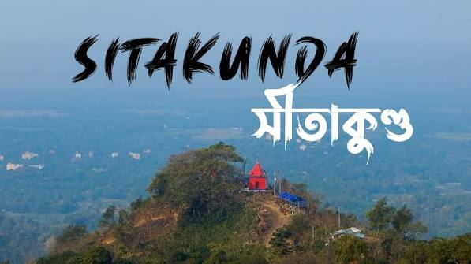

Cox's Bazar
Cox's Bazar is a major tourism hub in southeastern Bangladesh, globally famous for hosting the world's longest unbroken natural sandy sea beach, which stretches continuously for 120 kilometers along the Bay of Bengal
Saint Martin's Island
Saint Martin's Island is a small, breathtaking island located in the northeastern part of the Bay of Bengal. It is the only coral island in Bangladesh, situated about 9 kilometers south of the Tip of Teknaf, and marks the southernmost point of the country.


Sitakundo
Sitakunda is a historic upazila (sub-district) in the Chattogram District of Bangladesh, world-renowned for its rare combination of sacred mountains, cascading waterfalls, and unique coastal beaches. Located roughly 37 kilometers north of Chattogram city, it serves as a premier destination for trekkers, nature lovers, and pilgrims alike.